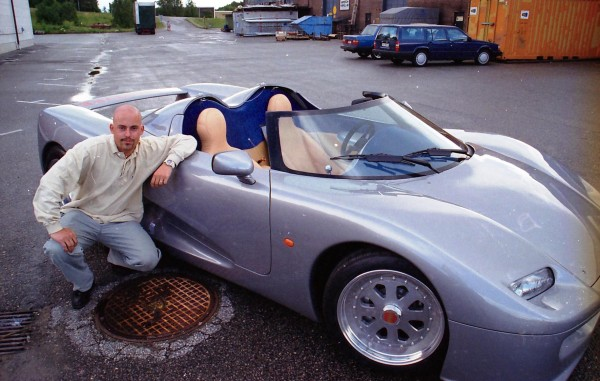
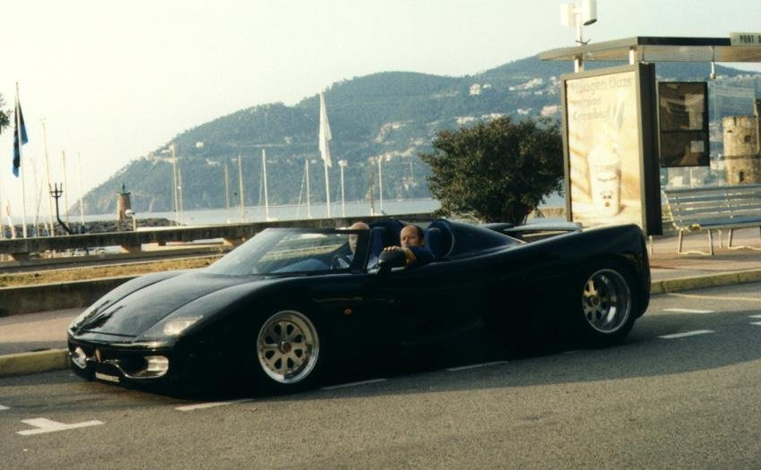
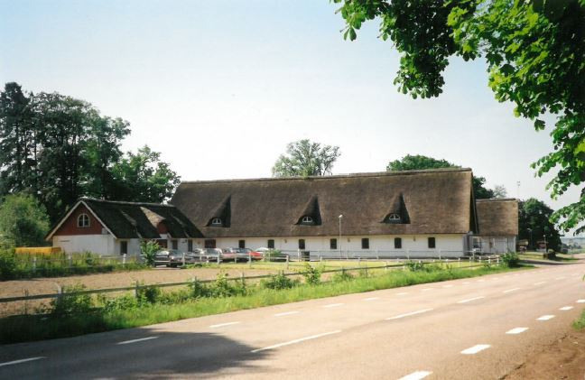
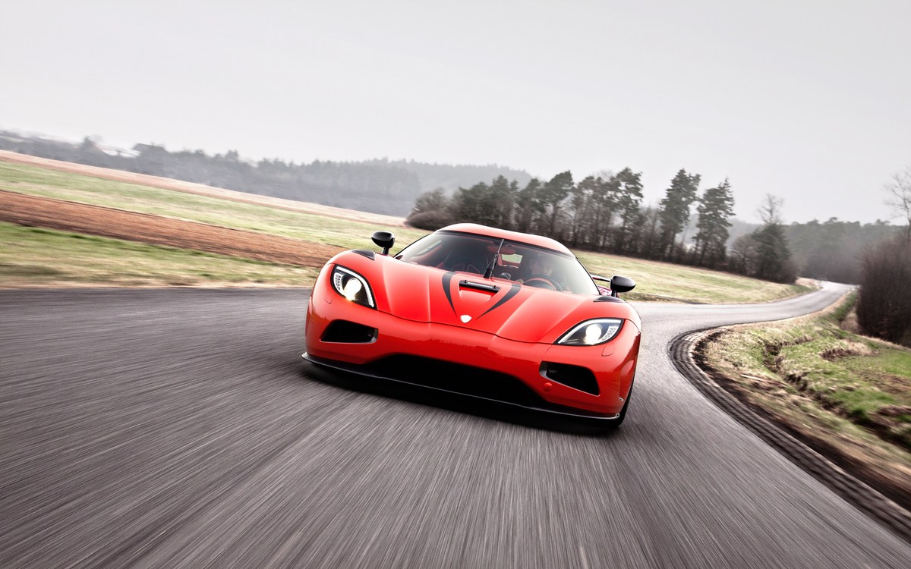
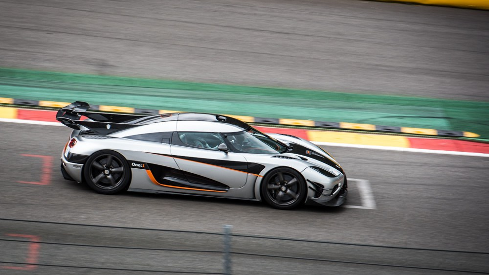
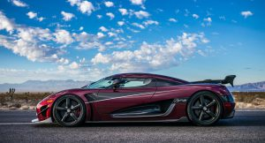
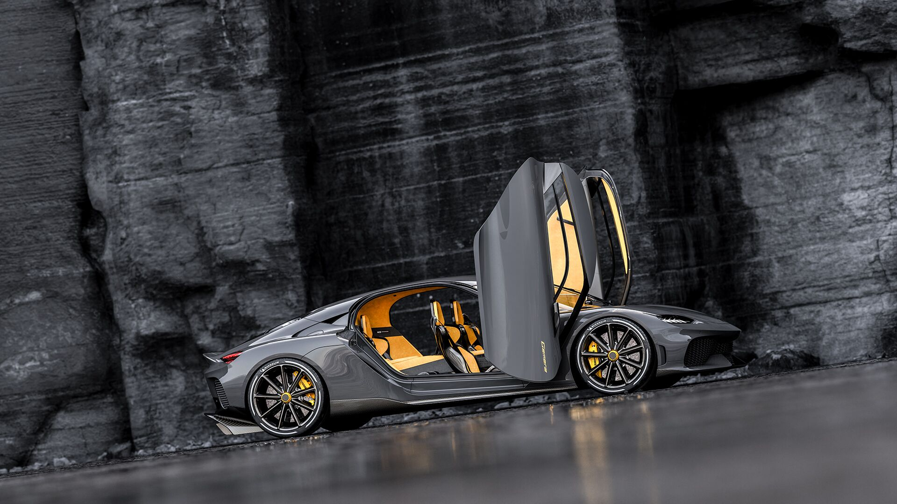

科尼赛克的故事是一个卑微的开始，奉献的愿景和不屈的承诺，以汽车的完美。看看下面的时间轴，看看他们从哪里来。唯一比他们现在所处的位置更令人兴奋的故事是他们未来的去向!
·1994 Koenigsegg Automotive is Born

1994年8月12日，22岁的克里斯蒂安·冯·科尼赛克决定追随自己的梦想，制造出世界上最伟大的超级跑车。科尼赛克汽车公司诞生。
·1997 Success at Cannes

科尼赛克CC原型在戛纳电影节上展出，立即获得了成功。较早的驾驶测试结果令人满意，再加上戛纳的媒体大肆报道，使公司得以继续前进，并参与到成品的创作中。
·1998 A New Home

1998年，科尼赛克从东南部海岸小镇奥洛夫斯特伦(Olofstrom)的原始作坊搬到了西南部一个名叫玛格丽特托普(Margretetorp)的小镇上的新作坊。
·2000 Koenigsegg’s Motor Show Debut in Paris
第一辆科尼赛克生产原型在2000年9月的巴黎车展上公开亮相。车展上的汽车是科尼赛克第一个cc8生产原型，后来成为测试车和碰撞测试车，使科尼赛克同质汽车销售。它的特色是早期版本的655马力的科尼赛克引擎，这款引擎后来也出现在客户的汽车上。
·2002 World’s Most Powerful Production Engine
2002年，科尼赛克cc8的发动机被吉尼斯世界纪录认证为世界上一系列生产的汽车中最强大的发动机。发动机产生488kW (655hp)。
·2002 Koenigsegg CC8S
2002年，科尼赛克cc8的发动机被吉尼斯世界纪录认证为世界上一系列生产的汽车中最强大的发动机。发动机产生488kW (655hp)。
·2004 World’s Most Powerful Production Car
科尼赛克CCR超过了科尼赛克cc8在2002年创下的记录。CCR配备了一个升级引擎，增加了超过150hp的总产出806hp。吉尼斯世界纪录在2004年验证了这个输出和这个记录。
·2005 World’s Fastest Car
2005年2月，科尼赛克带着新的CCR来到意大利的纳尔多，试图创造一项新纪录。这辆车在纳尔多停留了一个星期还没有打破纪录，但在最后一天，新的纪录终于被打破了，最高时速达到了387.86公里。汽车被打包并直接从纳尔多运到日内瓦参加2005年日内瓦车展那天下午。
·2011 Koenigsegg Agera R

到2011年，科尼赛克已经研究乙醇燃料4年了，所以很自然地，Agera将会得到一个能够使用这种动力增强的丛林果汁的发动机。于是，科尼赛克Agera R诞生了。
Agera R可以使用从95辛烷值汽油到E100生物燃料的任何燃料。它生产960马力的常规95辛烷值，但这一输出跃升到巨大的1140马力，无论是在E85或E100，与1,200纳米扭矩。同年，打破0km/h~300km/h~0km/h的记录
·2014 Koenigsegg One:1

科尼赛克One:1是历史上第一辆以1:1的动力重量比为特色的汽车。真正的革命。
已经很轻的重量从100公斤减少到1360公斤。科尼赛克在E85生物燃料上使用了1360马力的双涡轮V8发动机。One:1是科尼赛克有史以来最极端的，提供了惊人的加速和惊人的2g侧向抓地力。
1:独特的轨迹优化航空小翼、延伸的文丘里隧道和侧分流器、受勒芒启发和顶部安装的主动机翼配置，以及在微调空气管理下的主动优化。大型通风孔用于改善散热，车顶风斗支持1兆瓦的功率，8250转/分钟转速限制，补充定制的米其林杯轮胎，升级后三缸悬架与碳斜面弹簧和主动减震器和乘坐高度管理。
The One:1在2015年创下了Spa-Francorchamps和铃鹿赛道的圈数纪录。六辆客户用车和一辆工厂开发车被生产出来。
·2017 Highest top speed record

2017年11月4日，科尼赛克Agera RS在美国内华达州帕伦普创下了五项新的汽车生产世界纪录。在工厂司机Niklas Lilja的驱动下，Agera RS达到了生产车辆的最高速度。用两分的平均值计算的，在任何方向上都有一分。最高时速为447.19公里/小时(277.87英里/小时)。在同样的一次尝试中，它以33.29秒的成绩刷新了之前的0-400-0，打破了2017年10月同一辆赛车在丹麦创下的36.44秒的纪录。在公共道路上飞行一公里的最高平均速度是在两个方向上运行后计算出来的，速度为445.63公里/小时。最后，它还实现了公共道路上的最高速度(单方向)，达到了457.94公里/小时(284.55英里/小时)
·2020 Koenigsegg Gemera Launched

Gemera于2020年推出，是世界上第一款超大型gt，也是科尼赛克的第一款四座车。限量300辆，这是一个极端的巨型车，满足宽敞的内部和最终的环境意识。Gemera配备了小巧友好的巨型引擎(简称TFG)和经过验证的科尼赛克直接驱动，Gemera拥有1.27兆瓦的功率和3500纳米的扭矩。它可以在1.9秒内从0加速到100公里/小时，并以创纪录的速度达到400公里/小时。